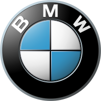
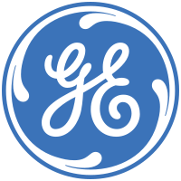
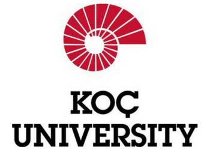

MSc in Computational Science and Engineering, Technical University of Munich (2026)
I work on numerical modeling, scientific computing, and machine learning for engineering applications.
I recently completed my MSc in Computational Science and Engineering at the Technical University of Munich. I hold a BSc in Mechanical Engineering and Computer Science from Koç University, where I developed a strong foundation in mathematics, physics, and computer science.
My academic background has equipped me with the necessary skills to tackle complex problems in a variety of fields, including simulations, numerical modeling, and deep learning. I am passionate about developing innovative solutions to real-world challenges, leveraging my knowledge in modeling, automation, optimization, and machine learning.
Creating computational models and simulations to understand complex physical phenomena and optimize engineering designs.
Developing and applying advanced machine learning techniques to solve complex computational problems.
Designing intelligent control systems and automation solutions for complex engineering applications.
Technical University of Munich, MSc in Computational Science and Engineering, 2026

B.B.W Automotive, München, Germany
Developing quality inspection mechanisms and automated discrepancy analysis algorithms for BMW plants in Bavaria.
Sono Motors, München, Germany
Implemented a solar energy yield simulation suite and created an automated system health check framework for telematics data.
Ubicro Technology, Istanbul, Turkey
Led the software design of an automated aeroponic agriculture system and built hardware/software for environmental control.

General Electric, Aviation, Istanbul, Turkey
Evaluated open-source FEA software and implemented automated simulation pipelines for engineering teams.
Siemens, Istanbul, Turkey
Developed the SDK for the SINUMERIK Edge Project and created a Python API to improve deployment efficiency.
Journal of Biomechanical Engineering, 2021
Technical University of Munich
Completed

Koç University
3.91/4.00 GPA. Highest ranking student in the mechanical engineering department. Double major degree.